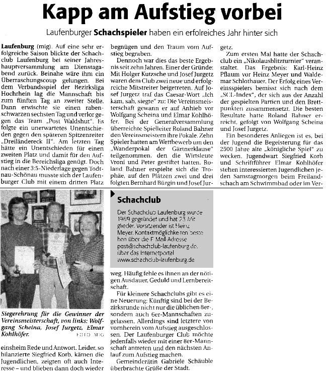

Der Vorstand 2004: Bürgin, Bahner, Kohlhöfer, Meyer (nicht im Bild: Korb)

Gute Laune war angesagt

Die strahlenden Sieger der Vereinsmeisterschaft:
Scheina (2.), Jurgetz (Vereinsmeister) und Kohlhöfer (3.)

Hier noch strahlender...
Und die Presse berichtete (ich schenk denen bei Gelegenheit mal ein 'n'):
